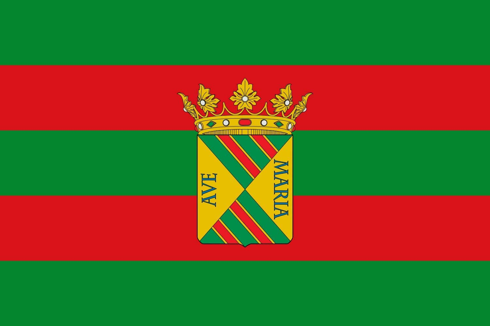

	<center><table height="25%" border="3" width="100%" height="100%" border-color="red">
	<tr>
	<td width="100%" height="100%" colspan="3" style="background-color: yellow">
	<br/>
	</center>

	<center> <h1> TORRELAVEGA </h1>
	</br> </center>
	<br/>
	</td>
    </tr>

	<tr>
	 <td>
		<p> Torrelavega es un municipio y ciudad del norte de España. La ciudad es de carácter industrial y comercial, siendo el segundo núcleo urbano más relevante de la comunidad autónoma de Cantabria por detrás de la capital autonómica Santander. Pertenece a la comarca del Besaya y se sitúa en un valle o vega a unos 8 kilómetros de la costa Cantábrica y a 24,5 kilómetros de la capital cántabra. 
		<br/>
		Su nombre actual es la contracción que, con el paso del tiempo, se ha producido del epónimo de la torre que construyó en la zona Leonor de la Vega, hija de Garcilaso II de la Vega y madre del Marqués de Santillana, para administrar los impuestos y los privilegios de su territorio. La conjunción de la torre y del nombre del lugar, título del señorío, habría que configurar la denominación de la villa mercantil e industrial que, desde el siglo xviii hasta hoy, conocemos con el nombre de Torrelavega. Otras denominaciones del territorio fueron «Aldea de la Vega», «La Vega» o «Corral de la Vega».
		</p>
	 </td>
	 <td BACKGROUND="fondo.jpg" >
	   <center width="300" height="200"><a href="lechera.html"> LA LECHERA </a></center> <br/>
	   <center width="300" height="200"><a href="verde.html"> LA VIA VERDE </a></center> <br/>
	   <center width="300" height="200"><a href="ayunta.html"> PLAZA DEL AYUNTAMIENTO  </a></center><br/>
	   <center width="300" height="200"><a href="principal.html"> INICIO </a></center><br/>
	 </td>
	 </tr>
	 </table>
	